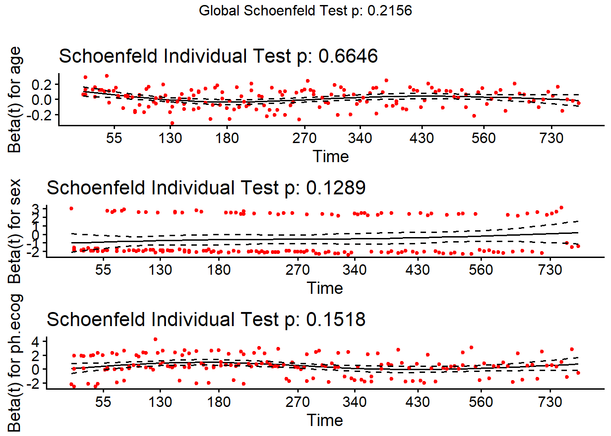

Modelo de Regresión de Cox, Hazard Ratios y Evaluación de Supuestos
Author
Jesús Esteban Hernández
Published
September 28, 2026
Regresión de Cox y Modelos Semiparamétricos
El modelo de riesgos proporcionales de Cox permite evaluar simultáneamente el efecto de múltiples variables continuas y categóricas sobre la tasa de riesgo instántaneo \(\lambda(t)\).
Ajustamos un modelo para evaluar el efecto de la edad, el sexo y la escala funcional ECOG (ph.ecog) sobre la supervivencia en cáncer de pulmón.
library(survival)library(survminer)# Ajuste del modelo de Cox multivariadofit_cox <-coxph(Surv(time, status ==2) ~ age + sex + ph.ecog, data = lung)# Resumen del modelo (Hazard Ratios, IC 95% y p-valores)summary(fit_cox)
Call:
coxph(formula = Surv(time, status == 2) ~ age + sex + ph.ecog,
data = lung)
n= 227, number of events= 164
(1 observation deleted due to missingness)
coef exp(coef) se(coef) z Pr(>|z|)
age 0.011067 1.011128 0.009267 1.194 0.232416
sex -0.552612 0.575445 0.167739 -3.294 0.000986 ***
ph.ecog 0.463728 1.589991 0.113577 4.083 4.45e-05 ***
---
Signif. codes: 0 '***' 0.001 '**' 0.01 '*' 0.05 '.' 0.1 ' ' 1
exp(coef) exp(-coef) lower .95 upper .95
age 1.0111 0.9890 0.9929 1.0297
sex 0.5754 1.7378 0.4142 0.7994
ph.ecog 1.5900 0.6289 1.2727 1.9864
Concordance= 0.637 (se = 0.025 )
Likelihood ratio test= 30.5 on 3 df, p=1e-06
Wald test = 29.93 on 3 df, p=1e-06
Score (logrank) test = 30.5 on 3 df, p=1e-06
Representación Gráfica de Hazard Ratios (Forest Plot)
Figure 1: Forest plot de los Hazard Ratios estimados por el modelo multivariado de Cox
Evaluación del Supuesto de Riesgos Proporcionales
El supuesto fundamental del modelo establece que la razón de riesgos (\(HR\)) permanece constante a lo largo del tiempo. Lo evaluamos mediante los residuos de Schoenfeld.
# Test estadístico de residuos de Schoenfeld (H0: riesgos proporcionales)test_ph <-cox.zph(fit_cox)test_ph
chisq df p
age 0.188 1 0.66
sex 2.305 1 0.13
ph.ecog 2.054 1 0.15
GLOBAL 4.464 3 0.22
# Gráfico de residuos a lo largo del tiempoggcoxzph(test_ph)

Figure 2: Diagnóstico gráfico del supuesto de riesgos proporcionales (residuos de Schoenfeld)
Conclusiones del Diagnóstico
Sexo: Presenta un efecto protector estadísticamente significativo en mujeres frente a hombres (\(HR < 1\), \(p < 0.001\)).
Escala ECOG: Un mayor deterioro funcional se asocia de forma independiente con un mayor riesgo de fallecimiento (\(HR > 1\)).
Evaluación del supuesto: El p-valor global del test cox.zph es mayor a 0.05, lo que confirma que el modelo cumple el supuesto de riesgos proporcionales.